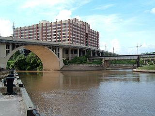
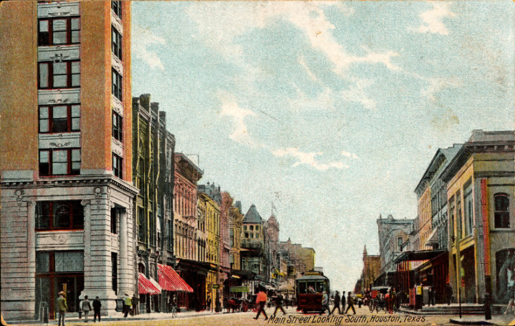
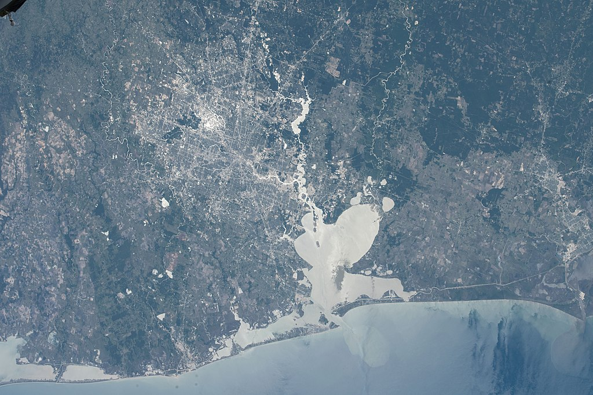
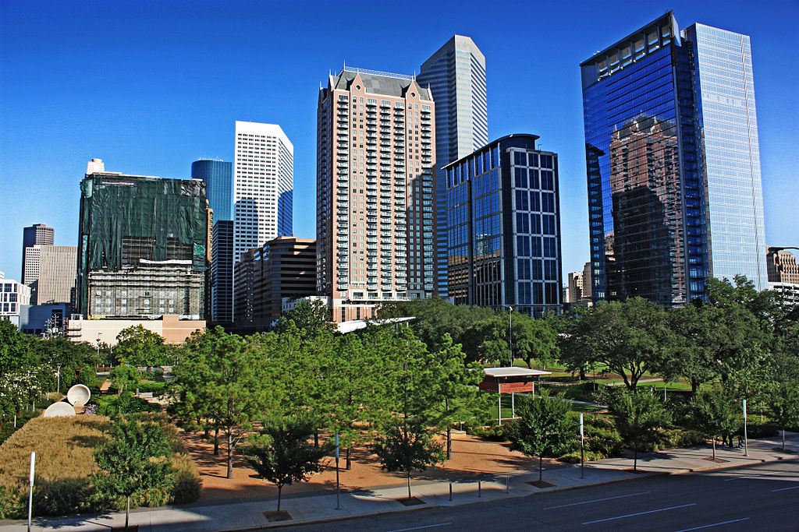

Хью́стон (англ. Houston, МФА: [ˈhjuːstən]) — четвёртый по количеству жителей город в Соединённых Штатах Америки и крупнейший город в штате Техас с населением 2 319 603 человека на 2017 год[1]. Хьюстон является административным центром округа Харрис, а также главным экономическим центром агломерации Большого Хьюстона с общим населением 6 892 427 человек на 2017 год[2]. Город располагается в 50 километрах от Мексиканского залива на прибрежной равнине.
Хьюстон был основан 30 августа 1836 года и включён в состав республики Техас 5 июня 1837 года, получив своё имя в честь Сэмюэла Хьюстона — главнокомандующего армией Техаса во время Техасской революции и президента Республики Техас. Быстрое развитие порта и железных дорог в XIX веке, а также начало добычи нефти и последовавшее развитие нефтяной промышленности в XX веке привели к быстрому росту населения. В 1960-е годы количество жителей превысило один миллион человек, а в 2000-е — два миллиона.
Город является ведущим мировым центром энергетической промышленности, а экономика города также представлена предприятиями в области аэронавтики, транспорта и здравоохранения. Важнейшими объектами для экономики и инфраструктуры города являются космический центр имени Линдона Джонсона, крупнейший американский по международным грузоперевозкам порт, хьюстонский судоходный канал, крупнейший в мире Техасский медицинский центр.
Город назван в честь Сэмюэла Хьюстона — главнокомандующего армией Техаса во время Техасской революции (1835—1836) и президента Республики Техас (1836—1838, 1841—1844)[3].
Официальное прозвище Хьюстона — «Space city», которое можно перевести, как «космический город», «город космонавтики» или «космоград». Название дано из-за того, что здесь находится космический центр имени Линдона Джонсона[4]. Всего город имеет 12 прозвищ.
Основание

Allen’s Landing — место, где был основан город
После окончания войны за независимость Техаса, в августе 1836 года предприниматели братья Август и Джон Аллены купили 26,9 км² земли вдоль реки Буффало-Байю[en], планируя основать на ней населённый пункт[7]. Они хотели, чтобы будущий город стал столицей Техаса и крупным торговым центром
Датой основания города принято считать 30 августа 1836 года[3][8], когда братья Аллены разместили объявление о появлении города[8]. Город назвали в честь генерала Сэма Хьюстона, возглавлявшего армию техасцев в битве при Сан-Хасинто во время войны против Мексики, позже избранного президентом Техаса[3][7][8]. На январь 1837 года в посёлке проживало всего 12 человек, однако через четыре месяца население возросло до 1 500 человек[8]. 5 июня 1837 года город был включён в округ Гаррисберг (ныне Харрис) и стал временной столицей Республики Техас, которой оставался до 1839 года[8][9]. Первым мэром Хьюстона стал Джеймс Холман[8][9].
XX век.

Мэйн-Стрит в центре, 1908 год
В 1900 году на Хьюстон обрушился Галвестонский ураган, продолжавшийся с 27 августа по 12 сентября[17]. В пересчете на сегодняшний курс ущерб составил бы $526 млн, погибло 8 тысяч человек[18]. В следующем году было найдено большое месторождение[en] нефти вблизи города Бомонт, что послужило началом развития нефтяной промышленности в Техасе[19][20]. В 1902 году президент США Теодор Рузвельт утвердил проект стоимостью в $1 млн на реконструкцию хьюстонского судоходного канала[20]. К 1910 году численность населения города достигла 78 800 человек, почти в два раза превысив количество жителей проживавших в Хьюстоне в 1900 году[1]. В 1914 году президент США Вудро Вильсон принял участие в открытии нового глубоководного порта Хьюстона, а через год был открыт хьюстонский судоходный канал[21].
К 1930 году Хьюстон стал самым большим городом Техаса, обогнав по численности населения такие города как Даллас, Форт-Уэрт и Остин[22][23].
Физико-географическая характеристика
Геграфическое положение и климат

Хьюстон со спутника, 2018 год
Хьюстон расположен в 50 километрах от Мексиканского залива на прибрежной равнине. Значительная часть города была построена на лесных угодьях, болотах и прериях, они до сих пор сохранились в близлежащих районах около Хьюстона. Город расположен на территории, для которой обычны частые ливни и дожди, поэтому для Хьюстона наводнения — постоянная проблема[43]. Высота города над уровнем моря в среднем 15 метров[44], самая высшая точка — северо-запад Хьюстона (38 метров)[44]. Площадь города составляет 1 552,9 км²[45].
Дни с ясной и дождливой погодой в месяц
Месяц
янв
фев
мар
апр
май
июн
июл
авг
сен
окт
ноя
дек
год
Солнечное сияние, день
10
10
9
8
8
8
10
9
7
7
8
9
106
Дождь, день
14
12
12
10
10
14
13
12
10
9
10
12
136
Рельеф, внутренние воды
Для почв Хьюстона характерно наличие осадочных горных пород и песка[53]. На поверхности часты эрозии, на территории города находится около 300 разломов, их общая длина примерно 500 км[54][55][56]. Один из них — Long Point–Eureka Heights fault system[en]. Также есть уникальные отложения из смеси песков и глин, благодаря ним, через определённое время, из разлагающихся органических веществ образуются нефть и природный газ. На окраинах Хьюстона встречается чёрная плодородная почва, на которой растят рис, сою, зерновые культуры, овощи и разводят крупный рогатый скот, лошадей, свиней и домашнюю птицу[57]. В городе и его окрестностях имеется очень малая вероятность сильного землетрясения[58], а самое сильное землетрясение магнитудой 3,8 было в 1910 году[59].
Флора и фауна

Парк Discovery green в центре Хьюстона
В флоре и фауне округа Харрис преобладают виды животных и растений, обитающих в болотных местностях, так как значительная часть города построена на болотах и прериях.
Среди земноводных и пресмыкающихся наиболее известны хьюстонская жаба[en] и техасская рогатая ящерица[en][62]. Среди млекопитающих можно отметить рыжего волка, оцелота и канадскую выдру[62][63]. Среди птиц замечаются американский клювач и белоголовый орлан[62]. Численность большинства животных за последний век значительно сократилась в черте округа и находится под угрозой исчезновения из-за их истребления и ухудшения экологической обстановки[62][63]. В городе также водятся комары, представляющие опасность человеку[64][65].